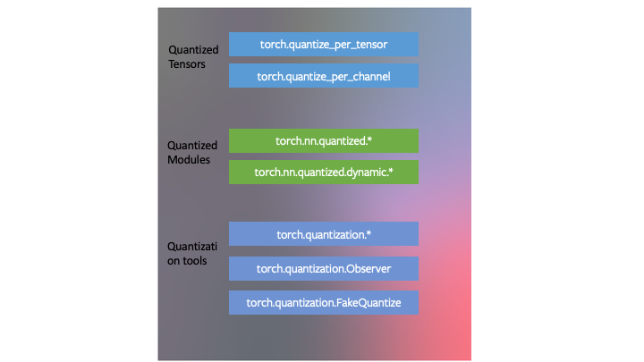

It’s important to make efficient use of both server-side and on-device compute resources when developing machine learning applications. To support more efficient deployment on servers and edge devices, PyTorch added a support for model quantization using the familiar eager mode Python API.
Quantization leverages 8bit integer (int8) instructions to reduce the model size and run the inference faster (reduced latency) and can be the difference between a model achieving quality of service goals or even fitting into the resources available on a mobile device. Even when resources aren’t quite so constrained it may enable you to deploy a larger and more accurate model. Quantization is available in PyTorch starting in version 1.3 and with the release of PyTorch 1.4 we published quantized models for ResNet, ResNext, MobileNetV2, GoogleNet, InceptionV3 and ShuffleNetV2 in the PyTorch torchvision 0.5 library.
This blog post provides an overview of the quantization support on PyTorch and its incorporation with the TorchVision domain library.
What is Quantization?
Quantization refers to techniques for doing both computations and memory accesses with lower precision data, usually int8 compared to floating point implementations. This enables performance gains in several important areas:
- 4x reduction in model size;
- 2-4x reduction in memory bandwidth;
- 2-4x faster inference due to savings in memory bandwidth and faster compute with int8 arithmetic (the exact speed up varies depending on the hardware, the runtime, and the model).
Quantization does not however come without additional cost. Fundamentally quantization means introducing approximations and the resulting networks have slightly less accuracy. These techniques attempt to minimize the gap between the full floating point accuracy and the quantized accuracy.
We designed quantization to fit into the PyTorch framework. The means that:
- PyTorch has data types corresponding to quantized tensors, which share many of the features of tensors.
- One can write kernels with quantized tensors, much like kernels for
floating point tensors to customize their implementation. PyTorch
supports quantized modules for common operations as part of
the
torch.nn.quantizedandtorch.nn.quantized.dynamicname-space. - Quantization is compatible with the rest of PyTorch: quantized models are traceable and scriptable. The quantization method is virtually identical for both server and mobile backends. One can easily mix quantized and floating point operations in a model.
- Mapping of floating point tensors to quantized tensors is customizable with user defined observer/fake-quantization blocks. PyTorch provides default implementations that should work for most use cases.

We developed three techniques for quantizing neural networks in
PyTorch as part of quantization tooling in
the torch.quantization name-space.
The Three Modes of Quantization Supported in PyTorch starting version 1.3
- Dynamic QuantizationThe
easiest method of quantization PyTorch supports is
called dynamic quantization. This involves not just
converting the weights to int8 – as happens in all quantization variants
– but also converting the activations to int8 on the fly, just before
doing the computation (hence “dynamic”). The computations will thus be
performed using efficient int8 matrix multiplication and convolution
implementations, resulting in faster compute. However, the activations
are read and written to memory in floating point format.
- PyTorch API: we have a simple API for dynamic
quantization in
PyTorch.
torch.quantization.quantize_dynamictakes in a model, as well as a couple other arguments, and produces a quantized model! Our end-to-end tutorial illustrates this for a BERT model; while the tutorial is long and contains sections on loading pre-trained models and other concepts unrelated to quantization, the part the quantizes the BERT model is simply:
importtorch.quantization quantized_model=torch.quantization.quantize_dynamic(model, {torch.nn.Linear}, dtype=torch.qint8) - PyTorch API: we have a simple API for dynamic
quantization in
PyTorch.
- Post-Training Static QuantizationOne
can further improve the performance (latency) by converting networks to
use both integer arithmetic and int8 memory accesses. Static
quantization performs the additional step of first feeding batches of
data through the network and computing the resulting distributions of
the different activations (specifically, this is done by inserting
“observer” modules at different points that record these distributions).
This information is used to determine how specifically the different
activations should be quantized at inference time (a simple technique
would be to simply divide the entire range of activations into 256
levels, but we support more sophisticated methods as well). Importantly,
this additional step allows us to pass quantized values between
operations instead of converting these values to floats – and then back
to ints – between every operation, resulting in a significant
speed-up.With this release, we’re supporting several features that allow
users to optimize their static quantization:
- Observers: you can customize observer modules which specify how statistics are collected prior to quantization to try out more advanced methods to quantize your data.
- Operator fusion: you can fuse multiple operations into a single operation, saving on memory access while also improving the operation’s numerical accuracy.
- Per-channel quantization: we can independently quantize weights for each output channel in a convolution/linear layer, which can lead to higher accuracy with almost the same speed.
- PyTorch API:
- To fuse modules, we
have
torch.quantization.fuse_modules - Observers are inserted
using
torch.quantization.prepare - Finally, quantization itself is done
using
torch.quantization.convert
- To fuse modules, we
have
myModelare:# set quantization config for server (x86)deploymentmyModel.qconfig=torch.quantization.get_default_config('fbgemm')# insert observerstorch.quantization.prepare(myModel, inplace=True)# Calibrate the model and collect statistics# convert to quantized versiontorch.quantization.convert(myModel, inplace=True) - Quantization Aware TrainingQuantization-aware
training(QAT) is the third method, and the one that typically
results in highest accuracy of these three. With QAT, all weights and
activations are “fake quantized” during both the forward and backward
passes of training: that is, float values are rounded to mimic int8
values, but all computations are still done with floating point numbers.
Thus, all the weight adjustments during training are made while “aware”
of the fact that the model will ultimately be quantized; after
quantizing, therefore, this method usually yields higher accuracy than
the other two methods.
- PyTorch API:
torch.quantization.prepare_qatinserts fake quantization modules to model quantization.- Mimicking the static quantization
API,
torch.quantization.convertactually quantizes the model once training is complete.
qat_model, then we simply perform quantization-aware training using:# specify quantization config for QATqat_model.qconfig=torch.quantization.get_default_qat_qconfig('fbgemm')# prepare QATtorch.quantization.prepare_qat(qat_model, inplace=True)# convert to quantized version, removing dropout, to check for accuracy on eachepochquantized_model=torch.quantization.convert(qat_model.eval(), inplace=False) - PyTorch API:
Device and Operator Support
Quantization support is restricted to a subset of available operators, depending on the method being used, for a list of supported operators, please see the documentation at https://pytorch.org/docs/stable/quantization.html.
The set of available operators and the quantization numerics also depend on the backend being used to run quantized models. Currently quantized operators are supported only for CPU inference in the following backends: x86 and ARM. Both the quantization configuration (how tensors should be quantized and the quantized kernels (arithmetic with quantized tensors) are backend dependent. One can specify the backend by doing:
import torchbackend='fbgemm'
# 'fbgemm' for server, 'qnnpack' for mobile
my_model.qconfig = torch.quantization.get_default_qconfig(backend)
# prepare and convert model
# Set the backend on which the quantized kernels need to be run
torch.backends.quantized.engine=backendHowever, quantization aware training occurs in full floating point and can run on either GPU or CPU. Quantization aware training is typically only used in CNN models when post training static or dynamic quantization doesn’t yield sufficient accuracy. This can occur with models that are highly optimized to achieve small size (such as Mobilenet).
Integration in torchvision
We’ve also enabled quantization for some of the most popular models in torchvision: Googlenet, Inception, Resnet, ResNeXt, Mobilenet and Shufflenet. We have upstreamed these changes to torchvision in three forms:
- Pre-trained quantized weights so that you can use them right away.
- Quantization ready model definitions so that you can do post-training quantization or quantization aware training.
- A script for doing quantization aware training — which is available for any of these model though, as you will learn below, we only found it necessary for achieving accuracy with Mobilenet.
- We also have a tutorial showing how you can do transfer learning with quantization using one of the torchvision models.
Choosing an approach
The choice of which scheme to use depends on multiple factors:
- Model/Target requirements: Some models might be sensitive to quantization, requiring quantization aware training.
- Operator/Backend support: Some backends require fully quantized operators.
Currently, operator coverage is limited and may restrict the choices listed in the table below: The table below provides a guideline.
| Model Type | Preferred scheme | Why |
|---|---|---|
| LSTM/RNN | Dynamic Quantization | Throughput dominated by compute/memory bandwidth for weights |
| BERT/Transformer | Dynamic Quantization | Throughput dominated by compute/memory bandwidth for weights |
| CNN | Static Quantization | Throughput limited by memory bandwidth for activations |
| CNN | Quantization Aware Training | In the case where accuracy can’t be achieved with static quantization |
Performance Results
Quantization provides a 4x reduction in the model size and a speedup of 2x to 3x compared to floating point implementations depending on the hardware platform and the model being benchmarked. Some sample results are:
| Model | Float Latency (ms) | Quantized Latency (ms) | Inference Performance Gain | Device | Notes |
| BERT | 581 | 313 | 1.8x | Xeon-D2191 (1.6GHz) | Batch size = 1, Maximum sequence length= 128, Single thread, x86-64, Dynamic quantization |
| Resnet-50 | 214 | 103 | 2x | Xeon-D2191 (1.6GHz) | Single thread, x86-64, Static quantization |
| Mobilenet-v2 | 97 | 17 | 5.7x | Samsung S9 | Static quantization, Floating point numbers are based on Caffe2 run-time and are not optimized |
Accuracy results
We also compared the accuracy of static quantized models with the floating point models on Imagenet. For dynamic quantization, we compared the F1 score of BERT on the GLUE benchmark for MRPC.
Computer Vision Model accuracy
| Model | Top-1 Accuracy (Float) | Top-1 Accuracy (Quantized) | Quantization scheme |
| Googlenet | 69.8 | 69.7 | Static post training quantization |
| Inception-v3 | 77.5 | 77.1 | Static post training quantization |
| ResNet-18 | 69.8 | 69.4 | Static post training quantization |
| Resnet-50 | 76.1 | 75.9 | Static post training quantization |
| ResNext-101 32x8d | 79.3 | 79 | Static post training quantization |
| Mobilenet-v2 | 71.9 | 71.6 | Quantization Aware Training |
| Shufflenet-v2 | 69.4 | 68.4 | Static post training quantization |
Speech and NLP Model accuracy
| Model | F1 (GLUEMRPC) Float | F1 (GLUEMRPC) Quantized | Quantization scheme |
| BERT | 0.902 | 0.895 | Dynamic quantization |
Conclusion
To get started on quantizing your models in PyTorch, start with the tutorials on the PyTorch website. If you are working with sequence data start with dynamic quantization for LSTM, or BERT. If you are working with image data then we recommend starting with the transfer learning with quantization tutorial. Then you can explore static post training quantization. If you find that the accuracy drop with post training quantization is too high, then try quantization aware training.
If you run into issues you can get community help by posting in at discuss.pytorch.org, use the quantization category for quantization related issues.
This post is authored by Raghuraman Krishnamoorthi, James Reed, Min Ni, Chris Gottbrath and Seth Weidman. Special thanks to Jianyu Huang, Lingyi Liu and Haixin Liu for producing quantization metrics included in this post.
Further reading:
- PyTorch quantization presentation at Neurips: (https://research.fb.com/wp-content/uploads/2019/12/2.-Quantization.pptx)
- Quantized Tensors (https://github.com/pytorch/pytorch/wiki/ Introducing-Quantized-Tensor)
- Quantization RFC on Github (https://github.com/pytorch/pytorch/ issues/18318)